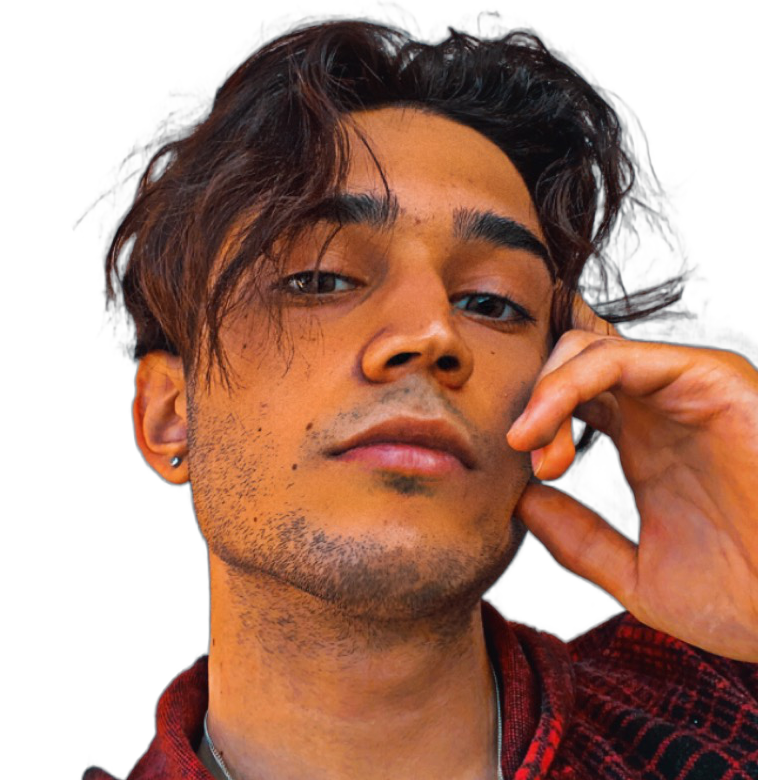

EFE KARABULUT
Hello, this is Efe Karabulut.
I do frontend design and backend development. My goal is to become a full-stack
developer. Of course there is more. At the same time, to become the best software developer in
the world, and i love listening to music. i Would like to be a DJ as a hobby. This is the
summary of Efe Karabulut